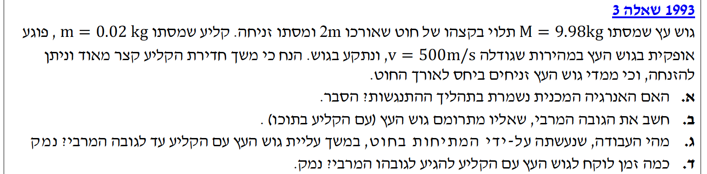

פתרון מלא מודרך, צעד-אחר-צעד, כולל ניתוח פדגוגי ודגשים לתלמידים.
עודכן:--- --:--:--
מבט כללי על השאלה
הבעיה מתארת מערכת של "מטוטלת בליסטית" ומחולקת למספר שלבים פיזיקליים מובחנים. בתחילה ננתח את תהליך ההתנגשות (אשר מתרחש בשבריר שנייה) באמצעות חוק שימור תנע קווי. לאחר מכן, ננתח את התנועה האנכית של המערכת המשותפת תוך שימוש בשיקולי עבודה ואנרגיה ותנועה מעגלית.
מפתח ההצלחה בשאלה מסוג זה הוא "הפרדת זמנים" - חשוב מאוד לא לערבב בין משוואות ושלב ההתנגשות לשלב העלייה במסלול המעגלי.
המחשה פעילה: מטוטלת בליסטית
לחצו על הפעל הדמיה כדי לראות את שלבי התנועה: הקליע פוגע בעץ, והגוף המשותף עולה כ"מטוטלת בליסטית" לנקודת השיא וחוזר לנקודה הנמוכה חלילה.

[תמונת השאלה המקורית]לא נמצאה תמונה בשם question-image.png באותה תיקייה.
סעיף א' - ניתוח התנגשות
מה נתון:
מסת הקליע: \( m = 0.02 \text{ kg} \) (היחידה כבר ב-MKS).
מהירות הקליע התחלתית: \( v = 500 \text{ m/s} \).
מסת גוש העץ: \( M = 9.98 \text{ kg} \).
גוש העץ במנוחה: \( u_M = 0 \text{ m/s} \).
התנגשות פלסטית לחלוטין (הקליע נתקע בעץ).
מה מחפשים:
האם האנרגיה המכנית של המערכת (קליע + גוש עץ) נשמרת במהלך ההתנגשות הקצרה? יש להסביר את התשובה.
נוסחאות או עקרונות בשימוש: \( W_{\text{nc}} = \Delta E \)
הסבר פיזיקלי:
התהליך המתואר הוא "התנגשות פלסטית" מושלמת, שכן הקליע נתקע בגוש העץ ושניהם נעים יחד לאחר מכן. בזמן חדירת הקליע לעץ, פועלים כוחות חיכוך חזקים מאוד בין הקליע לעץ.
כוחות פנימיים לא-משמרים אלו מבצעים עבודה, אשר גורמת לכך שחלק ניכר מהאנרגיה הקינטית המקורית לא יישמר כאנרגיה מכנית. במקום זאת, האנרגיה מומרת לאנרגיה תרמית (חום) ולאנרגיה פנימית של הגופים המעורבים בתהליך.
מסקנה: האנרגיה המכנית אינה נשמרת (היא מומרת בחלקה לאנרגיה פנימית ותרמית).
הערת מורה: מוקש נפוץ!
תלמידים רבים מתבלבלים בין חוק שימור התנע לחוק שימור האנרגיה. תנע תמיד נשמר במערכת סגורה (ללא כוחות חיצוניים בציר התנועה), אך אנרגיה מכנית נשמרת רק בהתנגשות אלסטית לחלוטין. ברגע שראיתם את המילה "נתקע" – תמיד תהיה "אובדן" של אנרגיה מכנית.
סעיף ב' - חישוב הגובה המרבי
מה נתון:
המסות והמהירות כמו בסעיף א'. כיוון חיובי ימינה.
התנע בציר האופקי נשמר במהלך ההתנגשות (זמן ההתנגשות קצר מאוד).
תאוצת הכובד: \( g = 10 \text{ m/s}^2 \).
מה מחפשים:
את הגובה המרבי \( h \) אליו מתרומם גוש העץ יחד עם הקליע ביחס לנקודת ההתנגשות.
נחשב את המהירות המשותפת \( u \) של הקליע וגוש העץ מיד לאחר ההתנגשות.
\[ m \cdot v + M \cdot 0 = (m + M) \cdot u \]
\[ 0.02 \cdot 500 + 9.98 \cdot 0 = (0.02 + 9.98) \cdot u \]
\[ 10 = 10 \cdot u \quad \Rightarrow \quad u = 1 \text{ m/s} \]
שלב 2: תנועה למעלה - שימור אנרגיה מכנית
מרגע סיום ההתנגשות, המערכת נעה בהשפעת כוח הכובד (משמר) וכוח המתיחות (שאינו מבצע עבודה, כפי שנוכיח בסעיף הבא). לכן האנרגיה המכנית נשמרת. בנקודת הגובה המרבי, המהירות הרגעית ועל כן האנרגיה הקינטית היא אפס.
מסקנה: הגובה המרבי אליו מתרומם גוש העץ הוא \( h = 0.05 \text{ m} \) (5 ס"מ).
הערת מורה: הפרדת זמנים בפתרון!
הסוד לפתרון תרגילים מסוג זה הוא אי-ערבוב בין השלבים: שלב ההתנגשות מחייב אך ורק שימוש בשימור תנע (האנרגיה אובדת). שלב התנועה לאחר ההתנגשות מחייב אך ורק שימוש בשימור אנרגיה (התנע אינו נשמר כי פועל כוח כובד המהווה כוח חיצוני בציר התנועה).
סעיף ג' - עבודת כוח המתיחות
מה נתון:
הגוף עולה במסלול מעגלי. כוח המתיחות בחוט פועל לכיוון נקודת התלייה.
מה מחפשים:
מהי העבודה שעושה כוח המתיחות \( W_T \) במשך העלייה, כולל נימוק מפורט.
נוסחאות מהדף: \( W = F \cos\theta \Delta s \)
ניתוח כוחות וחישוב עבודה:
נתבונן בתרשים הכוחות של הגוף תוך כדי תנועתו במעגל. כיוון ההעתק הרגעי (וקטור המהירות) משיק למסלול.
כיוון המתיחות בחוט פונה תמיד לעבר נקודת התלייה (רדיוס המעגל), בעוד כיוון התנועה משיק למעגל. הגיאומטריה קובעת שרדיוס מאונך למשיק בנקודת ההשקה, כלומר הזווית ביניהם היא בדיוק \( 90^\circ \).
\[ \cos(90^\circ) = 0 \quad \Rightarrow \quad W_T = F \cdot 0 \cdot \Delta s = 0 \]
מסקנה: העבודה שעושה כוח המתיחות היא אפס (\( W_T = 0 \text{ J} \)).
הערת מורה:
כל כוח שמאונך לכיוון התנועה אינו יכול להוסיף או לגרוע אנרגיה קינטית מהגוף ולכן אינו מבצע עבודה. תפקידו של הכוח המאונך הוא לשנות את כיוון המהירות, לא את גודלה.
סעיף ד' - זמן העלייה לגובה המרבי
הערה לתלמידים: בשנים האחרונות קורה לעיתים שנושא ה"תנועה ההרמונית" אינו נכלל במיקוד לבגרות. סעיף ד' מתאים לשנה שבה הנושא כן נמצא במיקוד. שווה לבדוק מול המורה האם נושא זה רלוונטי לשנת ההיבחנות שלכם.
זמן מחזור שלם מתאר תנועה מנקודת השיווי משקל לקצה הימני, חזרה לשיווי משקל, לקצה השמאלי וחזרה. התנועה מנקודת שיווי המשקל המרכזית עד לקצה הימני (הגובה המרבי) מהווה בדיוק רבע מחזור.
מסקנה: הזמן שלוקח לגוש להגיע לגובהו המרבי הוא \( t \approx 0.702 \text{ s} \).
הערת מורה: עצמאות המסה
שימו לב שנוסחת זמן המחזור של מטוטלת פשוטה אינה תלויה במסה של הגוף התלוי (רק באורך החוט ובתאוצת הכובד). גודל המהירות גדל או קטן בדרך, אבל סך הזמן יישאר זהה גם אם נתלה שם משקולת של טון, כל עוד זווית התנודה קטנה.
נוסח השאלה המקורית
[תמונת השאלה המקורית]לא נמצאה תמונה בשם question-image.png.